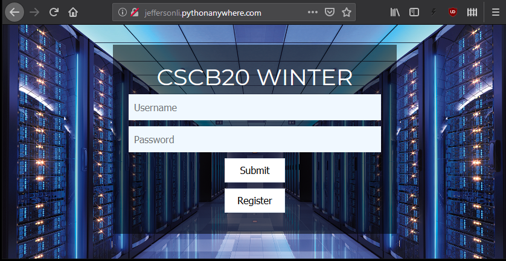
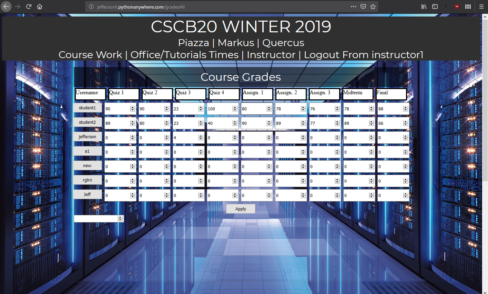
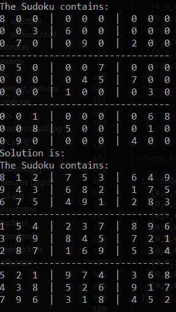

* Click on Bolded Names to be Redirected to Each Respective Repository
- Login authenticated with Post requests to Flask
- Created with flask backend linking to a SQLite database
- Complete with individual marks, remark requests, Instructor Feedback, and mark changing
- Created for CSCB20 course at UTSC


- Used C for performance
- Implimented a recurive backtracing solution
- Can quickly solve 9 by 9 puzzles, even very sparce puzzles
- Detects when a puzzle is unsolvable
- Includes a print sudoku function

- Used HTMl5 and CSS
- Took multiple training courses on Lynda.com
- Gave special attention to the semantic meaning of my site to ensure accessibility
- Used Andoid Studios as the developement tool
- Creates notification that is to be tapped to skip ad
- Uses Spotify APIs to make ad skipping lightweight and fast
- Used Andoid Studios as the developement tool
- Utilized android services to track background usage
- Demonstrated curiosity and the ability to independently problem solve